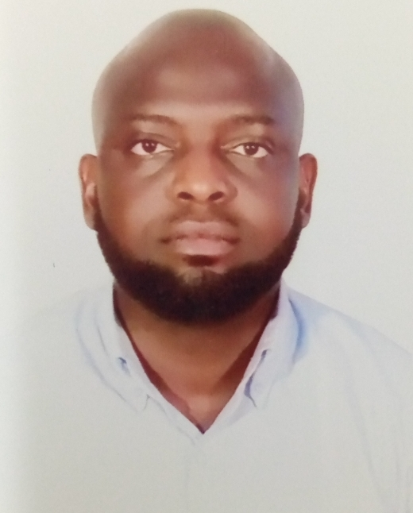

Gbunoghene Eseoghene Jacob | WDD 130
About Me: I am Eseoghene, an enthusiastic and dedicated undergraduate student pursuing a degree in Software Development. Future Goals: - Pursue a Master's degree in Artificial Intelligence and work on cutting-edge AI research. - Aspire to become a software engineer specialized in machine learning. Hobbies: deep thinking and reflections I am open to connecting with fellow students, faculty, and professionals who share my interest in software development and technology.